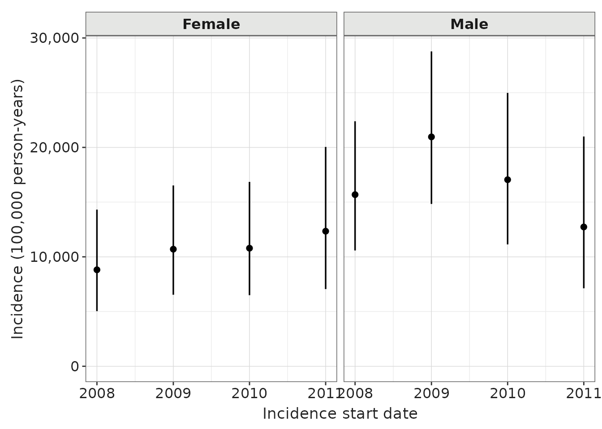
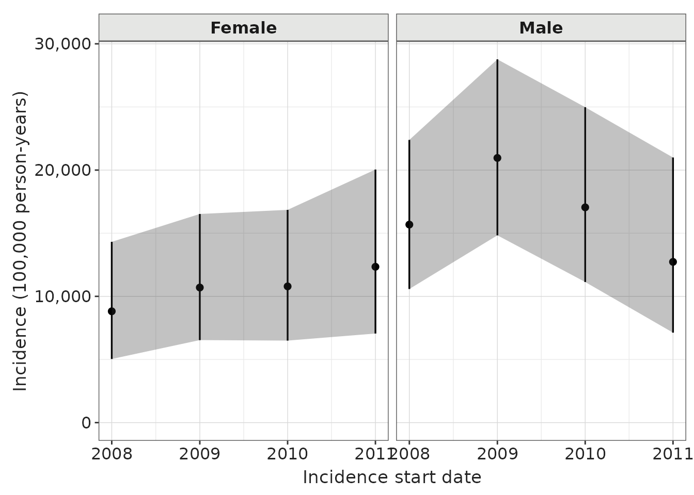
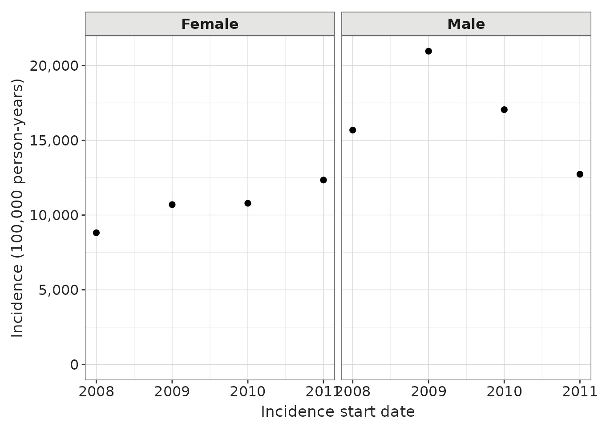

Plotting options
a06_Plotting_options.RmdIntroduction
This package provides functions to create an incidence or prevalence
plot. There are a couple of options that can be specified when creating
such a plot. In this vignette we are using the options in the
plotIncidence function, however these same options can be
specified in the plotPrevalence function.
cdm <- mockIncidencePrevalence(
sampleSize = 10000,
outPre = 0.5
)
#> Note: method with signature 'DBIConnection#Id' chosen for function 'dbExistsTable',
#> target signature 'duckdb_connection#Id'.
#> "duckdb_connection#ANY" would also be valid
cdm <- generateDenominatorCohortSet(
cdm = cdm, name = "denominator",
cohortDateRange = c(as.Date("2008-01-01"), as.Date("2012-01-01")),
sex = c("Male", "Female")
)
#> ℹ Creating denominator cohorts
#> ✔ Cohorts created in 0 min and 3 sec
inc <- estimateIncidence(
cdm = cdm,
denominatorTable = "denominator",
outcomeTable = "outcome",
interval = "years"
)
#> Getting incidence for analysis 1 of 2
#> Getting incidence for analysis 2 of 2
#> Overall time taken: 0 mins and 1 secsFaceted plot
This is the default incidence plot where the plot has been faceted by sex.
plotIncidence(inc, facet = "denominator_sex")
Faceted plot - with lines
This is the previous plot where the dots are connected.
plotIncidence(inc, facet = "denominator_sex", ribbon = TRUE)
Faceted plot - with lines, no confidence interval
This is the previous plot where the dots are connected but no confidence interval is shown.
plotIncidence(inc, facet = "denominator_sex", ribbon = TRUE,
options = list('hideConfidenceInterval' = TRUE))
Faceted plot - with lines, no confidence interval, stacked, free scales
This is the previous plot where the subplots are shown on top of each
other. The facetNcols variable defines the number of
columns of the subplots. In addition we set facetScales as
“free” so that the axis can vary by facet.
plotIncidence(inc, facet = "denominator_sex", ribbon = TRUE,
options = list('point' = FALSE,
'facetNcols' = 1,
'facetScales' = "free"))
More plot options
To know which other options are available to customise plots refer to
the function optionsPlot(). The description provides a
brief explanation on each of the options.
optionsPlot()
#> $hideConfidenceInterval
#> [1] FALSE
#>
#> $line
#> [1] FALSE
#>
#> $point
#> [1] TRUE
#>
#> $facetNcols
#> NULL
#>
#> $facetScales
#> [1] "fixed"